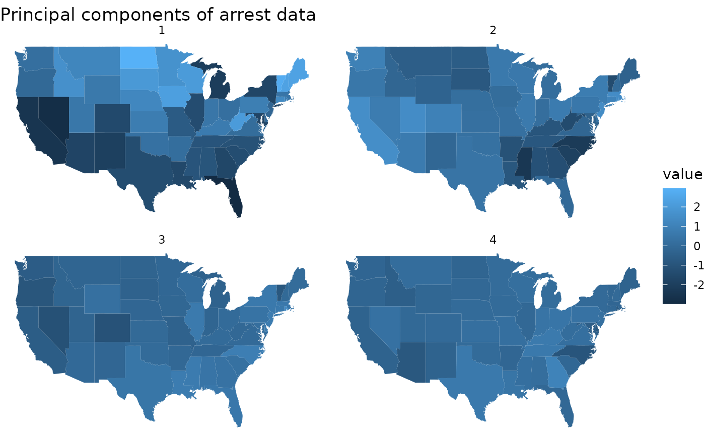
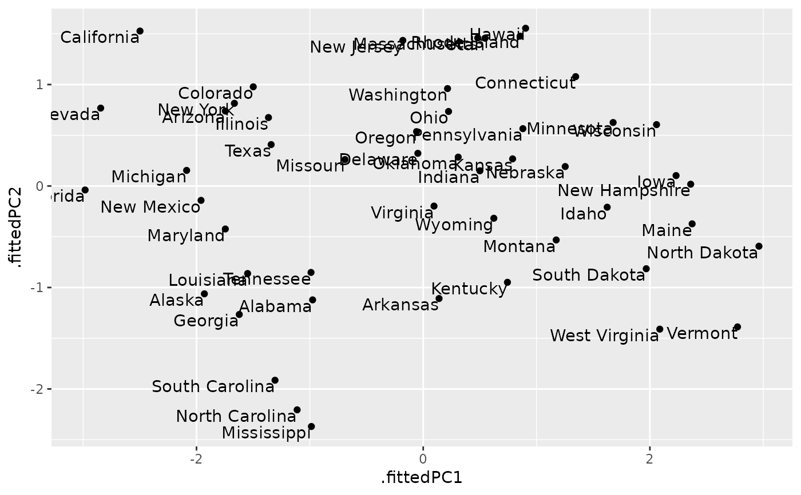

Tidy summarizes information about the components of a model. A model component might be a single term in a regression, a single hypothesis, a cluster, or a class. Exactly what tidy considers to be a model component varies across models but is usually self-evident. If a model has several distinct types of components, you will need to specify which components to return.
Usage
# S3 method for prcomp
tidy(x, matrix = "u", ...)Arguments
- x
A
prcompobject returned bystats::prcomp().- matrix
Character specifying which component of the PCA should be tidied.
"u","samples","scores", or"x": returns information about the map from the original space into principle components space."v","rotation","loadings"or"variables": returns information about the map from principle components space back into the original space."d","eigenvalues"or"pcs": returns information about the eigenvalues.
- ...
Additional arguments. Not used. Needed to match generic signature only. Cautionary note: Misspelled arguments will be absorbed in
..., where they will be ignored. If the misspelled argument has a default value, the default value will be used. For example, if you passconf.lvel = 0.9, all computation will proceed usingconf.level = 0.95. Two exceptions here are:
Value
A tibble::tibble with columns depending on the component of
PCA being tidied.
If matrix is "u", "samples", "scores", or "x" each row in the
tidied output corresponds to the original data in PCA space. The columns
are:
rowID of the original observation (i.e. rowname from original data).
PCInteger indicating a principal component.
valueThe score of the observation for that particular principal component. That is, the location of the observation in PCA space.
If matrix is "v", "rotation", "loadings" or "variables", each
row in the tidied output corresponds to information about the principle
components in the original space. The columns are:
rowThe variable labels (colnames) of the data set on which PCA was performed.
PCAn integer vector indicating the principal component.
valueThe value of the eigenvector (axis score) on the indicated principal component.
If matrix is "d", "eigenvalues" or "pcs", the columns are:
PCAn integer vector indicating the principal component.
std.devStandard deviation explained by this PC.
percentFraction of variation explained by this component (a numeric value between 0 and 1).
cumulativeCumulative fraction of variation explained by principle components up to this component (a numeric value between 0 and 1).
Details
See https://stats.stackexchange.com/questions/134282/relationship-between-svd-and-pca-how-to-use-svd-to-perform-pca for information on how to interpret the various tidied matrices. Note that SVD is only equivalent to PCA on centered data.
See also
Other svd tidiers:
augment.prcomp(),
tidy_irlba(),
tidy_svd()
Examples
pc <- prcomp(USArrests, scale = TRUE)
# information about rotation
tidy(pc)
#> # A tibble: 200 × 3
#> row PC value
#> <chr> <dbl> <dbl>
#> 1 Alabama 1 -0.976
#> 2 Alabama 2 1.12
#> 3 Alabama 3 -0.440
#> 4 Alabama 4 0.155
#> 5 Alaska 1 -1.93
#> 6 Alaska 2 1.06
#> 7 Alaska 3 2.02
#> 8 Alaska 4 -0.434
#> 9 Arizona 1 -1.75
#> 10 Arizona 2 -0.738
#> # … with 190 more rows
# information about samples (states)
tidy(pc, "samples")
#> # A tibble: 200 × 3
#> row PC value
#> <chr> <dbl> <dbl>
#> 1 Alabama 1 -0.976
#> 2 Alabama 2 1.12
#> 3 Alabama 3 -0.440
#> 4 Alabama 4 0.155
#> 5 Alaska 1 -1.93
#> 6 Alaska 2 1.06
#> 7 Alaska 3 2.02
#> 8 Alaska 4 -0.434
#> 9 Arizona 1 -1.75
#> 10 Arizona 2 -0.738
#> # … with 190 more rows
# information about PCs
tidy(pc, "pcs")
#> # A tibble: 4 × 4
#> PC std.dev percent cumulative
#> <dbl> <dbl> <dbl> <dbl>
#> 1 1 1.57 0.620 0.620
#> 2 2 0.995 0.247 0.868
#> 3 3 0.597 0.0891 0.957
#> 4 4 0.416 0.0434 1
# state map
library(dplyr)
library(ggplot2)
library(maps)
pc %>%
tidy(matrix = "samples") %>%
mutate(region = tolower(row)) %>%
inner_join(map_data("state"), by = "region") %>%
ggplot(aes(long, lat, group = group, fill = value)) +
geom_polygon() +
facet_wrap(~PC) +
theme_void() +
ggtitle("Principal components of arrest data")

au <- augment(pc, data = USArrests)
au
#> # A tibble: 50 × 9
#> .rownames Murder Assault UrbanPop Rape .fittedPC1 .fittedPC2
#> <chr> <dbl> <int> <int> <dbl> <dbl> <dbl>
#> 1 Alabama 13.2 236 58 21.2 -0.976 1.12
#> 2 Alaska 10 263 48 44.5 -1.93 1.06
#> 3 Arizona 8.1 294 80 31 -1.75 -0.738
#> 4 Arkansas 8.8 190 50 19.5 0.140 1.11
#> 5 California 9 276 91 40.6 -2.50 -1.53
#> 6 Colorado 7.9 204 78 38.7 -1.50 -0.978
#> 7 Connecticut 3.3 110 77 11.1 1.34 -1.08
#> 8 Delaware 5.9 238 72 15.8 -0.0472 -0.322
#> 9 Florida 15.4 335 80 31.9 -2.98 0.0388
#> 10 Georgia 17.4 211 60 25.8 -1.62 1.27
#> # … with 40 more rows, and 2 more variables: .fittedPC3 <dbl>,
#> # .fittedPC4 <dbl>
ggplot(au, aes(.fittedPC1, .fittedPC2)) +
geom_point() +
geom_text(aes(label = .rownames), vjust = 1, hjust = 1)
